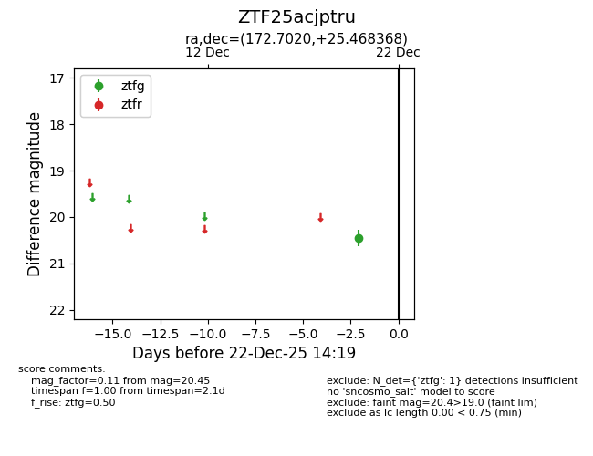
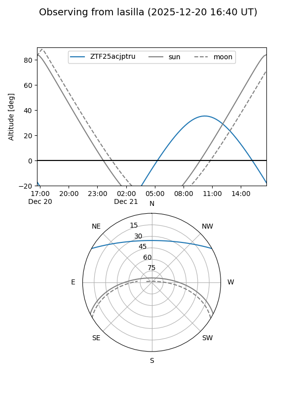
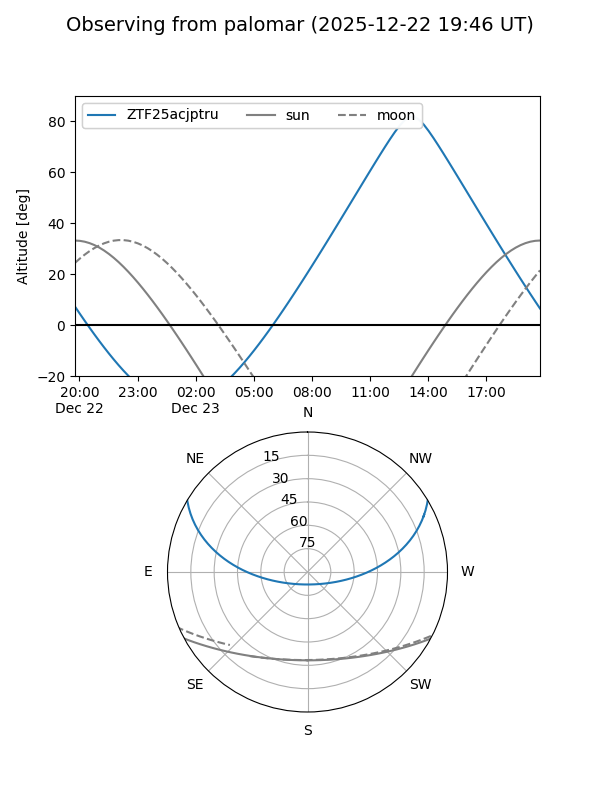

ZTF25acjptru
Target ZTF25acjptru at 2025-12-22 19:50
Aliases and brokers:
FINK: fink-portal.org/ZTF25acjptru
Lasair: lasair-ztf.lsst.ac.uk/objects/ZTF25acjptru
ALeRCE: alerce.online/object/ZTF25acjptru
alt names
ZTF25acjptru (ztf,fink_ztf)
Coordinates:
equatorial (ra, dec) = 172.7020,+25.46837
equatorial (HMS+DMS) = 11:30:48.49,+25:28:06.13
galactic (l, b) = (213.6227,+71.87227)
Flags:
Photometry:
last ztfg=20.08
2 ztfg detections
Lightcurve

Visibility


Additional plots